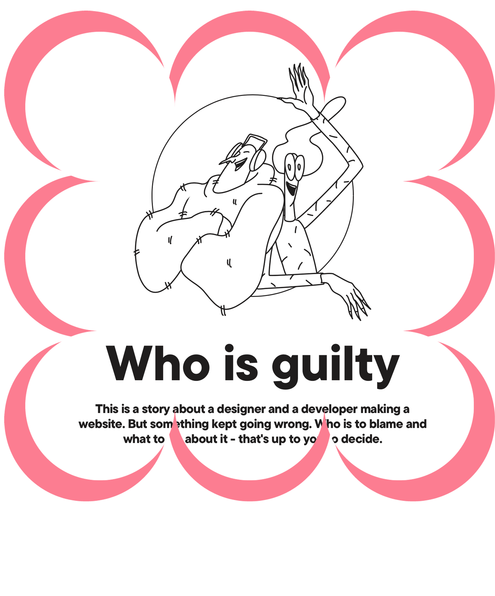

Hola, soy Amparo Zamora
Bienvenidos a mi portfolio. Aquí encontrarás mis proyectos y trabajos
realizados durante
el curso de Fundamentos del Diseño Web.
Práctica 1
Who is Guilty (CSS Design Awards)
La propuesta visual de Who is Guilty se fundamenta en la simplicidad estética para potenciar el mensaje central del sitio: la importancia de la colaboración efectiva entre diseñadores y desarrolladores. La paleta se reduce intencionalmente al blanco y negro, lo que no solo aporta un aire profesional y sobrio, sino que también refuerza la claridad conceptual. Las ilustraciones, realizadas con líneas delgadas y formas simples, generan un lenguaje visual relajado pero coherente, que aligera el contenido sin perder profundidad. Esta estética se ve acompañada por una interfaz sumamente limpia, donde el contenido está cuidadosamente alineado y el ritmo de navegación es suave y progresivo. Los efectos de sonido discretos y las transiciones sutiles agregan dinamismo sin interferir en la concentración del usuario. La experiencia se construye como una narrativa interactiva, en la que se muestran situaciones que evidencian los problemas de comunicación entre disciplinas, y se culmina con dos guías prácticas, una para diseñadores y otra para desarrolladores, que ofrecen recomendaciones claras y aplicables. A nivel técnico, se percibe un uso eficiente de layouts flexibles, animaciones bien calibradas, una excelente optimización responsive y un dominio preciso de las propiedades modernas de CSS. El equilibrio entre diseño visual, funcionalidad y mensaje es lo que realmente da valor a esta web, convirtiéndola en un referente de cómo la estética minimalista puede ir de la mano con una experiencia rica, bien dirigida y perfectamente ejecutada.
KAIJU (Awwwards))
El diseño de la web de KAIJU es una declaración visual atrevida que captura instantáneamente la esencia del restaurante: fusión, intensidad y audacia. La estética se basa en una paleta cromática neón dominada por fucsia y verde amarillento, contrastados con fondo negro, lo que genera un fuerte impacto visual y una atmósfera casi cinematográfica. Esta elección no solo responde a un criterio estético llamativo, sino que también comunica la identidad vibrante y urbana del local. El uso de tipografías gruesas, modernas y de alto contraste refuerza esa sensación de contundencia. Uno de los aspectos más destacados del sitio es el desplazamiento horizontal animado, que rompe con la tradicional navegación vertical y genera una experiencia más envolvente. A esto se suma el personaje estilo kaiju (una especie de Godzilla), que avanza conforme el usuario navega, acompañado de un cursor que se transforma en garra, creando una sensación lúdica y dinámica muy coherente con el tono general. Aunque el contenido del sitio es breve, está estratégicamente organizado para ofrecer solo lo esencial, con menús accesibles y llamadas a la acción bien integradas. La experiencia visual es fluida y está diseñada para cautivar desde el primer momento sin saturar. A nivel técnico, el sitio demuestra un dominio sólido de animaciones CSS, disposición flexible y un uso eficaz del espacio, consiguiendo un resultado que no solo es visualmente atractivo, sino también funcional, expresivo y memorable.
Re-invinted (FWA)
La web de Re-invinted ofrece una experiencia interactiva pensada cuidadosamente desde el diseño visual hasta la arquitectura de la navegación. Su estética se construye con una paleta de colores suaves y tonos pasteles, que aportan una sensación de cercanía, equilibrio y amabilidad. Esta elección cromática genera un contraste deliberado con la energía de sus elementos animados, consiguiendo una armonía muy bien lograda entre lo informativo y lo entretenido. El diseño está basado en bloques visuales bien definidos, con ilustraciones limpias, tipografía amigable y un ritmo de navegación que guía al usuario con naturalidad. Uno de los recursos más interesantes es el test inicial, donde el usuario descubre su "persona" dentro del movimiento de consumo consciente. A través de tarjetas verticales animadas y organizadas como una especie de recorrido visual, se presenta una experiencia gamificada que hace muy placentero el proceso de aprendizaje. El sitio, además, permite explorar perfiles alternativos, cada uno con un nombre original y un objeto que actúa como símbolo visual de su identidad, lo que incentiva la exploración. Técnicamente, la página está muy bien optimizada, adaptándose de forma responsiva a distintos dispositivos y manteniendo un rendimiento fluido a pesar de los recursos interactivos. La combinación de diseño limpio, interactividad inteligente y estructura clara convierte esta web en un excelente ejemplo de cómo una experiencia digital puede ser divertida, accesible y educativa sin perder elegancia.
Distil (Webby Awards)
El sitio del estudio Distil se presenta como una experiencia digital enérgica y envolvente, donde cada rincón está cuidadosamente animado para comunicar su enfoque innovador en diseño, tecnología y storytelling. Visualmente, el diseño está cargado de estímulos: colores vibrantes, tipografías audaces, transiciones dinámicas y efectos en movimiento que se suceden constantemente, pero que, gracias a una estructura inteligente y una jerarquía visual bien definida, nunca resultan abrumadores. Las animaciones no son un adorno superficial, sino que están al servicio de la narrativa y el ritmo del recorrido, generando una navegación fluida y atractiva. Un detalle funcional muy acertado es la barra de navegación que desaparece al hacer scroll hacia abajo y reaparece al subir, permitiendo que el contenido cobre protagonismo sin perder accesibilidad. Cada sección del sitio está diseñada para funcionar como una unidad independiente, pero interconectada, facilitando tanto la exploración del portafolio como la inmersión en la identidad del estudio. Las transiciones están cuidadosamente coreografiadas y la integración de tecnologías modernas —como WebGL, efectos scroll-based y layouts responsivos— demuestra un dominio técnico de alto nivel. La experiencia general refleja a la perfección la filosofía de Distil: creativa, experimental y centrada en revelar historias a través del diseño interactivo. Más que una web institucional, es una expresión viva de su visión y de su capacidad para empujar los límites del diseño digital, lo cual justifica ampliamente su reconocimiento en los Webby Awards.